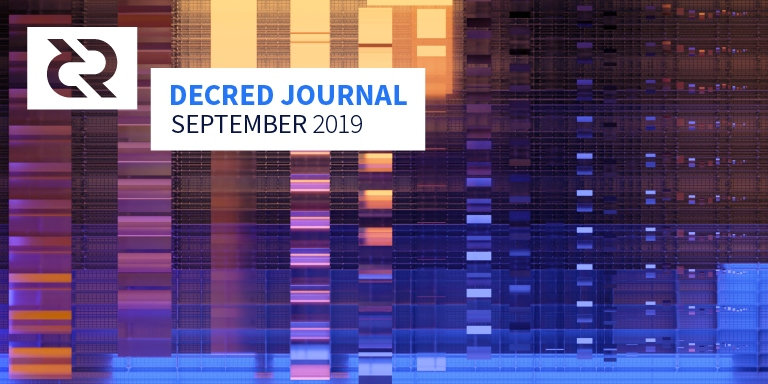

Decred月报 - 2019年9月

图片: On-Chain Seasonality by @saender
- Decred项目家族新添加了PoW矿池软件dcrpool。高质量的开源矿池软件很少，并且对此类软件的需求成为新矿池的障碍。dcrpool填补了这一空白，现在任何人都可以启动自己的私人或公共矿池，这将有利于PoW挖矿的去中心化。
- dcrstakepool v1.2.0已发布。此版本始于2017年9月的开发工作，带来了许多增强功能，包括管理员可以使用不同的界面来处理不足费用购买的选票，全面改进的前端设计，增加安全性，更新的术语，减少了对第三方，以及各种错误修复。
- 9月是整合添加的重要月份，DCR支持已添加到Trust Wallet，Exodus移动钱包，添加使用LN进行付款的Joule Chrome扩展以及其它服务。
开发进展总结
dcrd: 已实现第2版紧凑型过滤器。与v1滤镜相比，它们占用的空间更少，这对于轻节点客户端（SPV）而言将是一个改进。同样，v2过滤器将用于区块头中。
内存池模块接收到的一部分错误代码。在相关的代码中被删除，包括删除支持getwork的getblocktemplate 。
进行了多个小范围调整，以进行重构，改进测试覆盖的范围和文档以及错误修复。
dcrwallet: dcrwallet的Go代码现在其模块名称使用decred.org而不是github.com。这里讨论了更广泛地采用这种方法以减少对GitHub的依赖的看法。
为Go 1.13添加了构建支持，以及为1.11提供了构建支持。
集成CoinShuffle++的工作仍在继续。
Decrediton: “帐户”界面进行了改善，而“安全”界面则显示了钱包的地址派生信息（可用于调试）。
闪电网络的集成工作即将完成。工作继续将 启动重构为有限状态机，使其更加安全可靠。
Politeia: 新的Politeia设计在测试网上进行，欢迎进行测试/反馈。
CMS系统取得了重大进展，DCC系统的基础和与承包商交互的功能已合并，同时为CMS和DCC提供了一系列较小的改进和错误修复。提案网站上即将出现的优先事项是RFP提案和Trillian集成，这将为单个内容加盖时间戳。
dcrstakepool: v1.2版本已发布在主网上。
前端增加了一个新的仅用于管理低价票的管理员页面。此页面将列出所有已购买且费用不足的选票，并允许管理员手动将这些选票添加到符合条件的选票中。以前，必须通过直接操作数据库来手动执行此操作。
新的前端设计使dcrstakepool达到了其他Decred软件（例如Decrediton）中看到的专业标准。
根据VSP运营商的要求，已经实现了对加密SMTP连接的支持，包括对自签名证书的支持。这使VSP可以保护通过SMTPS传输的注册和帐户找回电子邮件。
与dcrwallet的所有通信现在都必须通过StakePoold进行。这种架构改变降低了RPC调用在网络上的数量，降低了代码复杂度，并且允许关闭DCRelpSpCon和DCRWalk之间的端口。
自定义MySQL数据存储已取代了用于存储会话cookie的基于文件的存储解决方案。这解决了与会话数据有关的几个已知的安全问题。
Google的reCAPTCHA已被Go中实现的自托管解决方案取代。现在，所需的所有资源都由VSP托管，而不是由第三方托管。此版本中包含的前端完全不执行任何外部JavaScript，从而大大提高了用户的安全性和隐私性。
进行了一些安全性改进，为了防止跨站点请求伪造（CSRF）攻击，将私人数据泄露给第三方，恶意链接以及浏览器缓存敏感信息。
此次发布是自2017年9月以来20位贡献者发出的160个合并的成果。有关正式版的完整详细信息，请参见版本说明。
dcrpool: 经过一年多的酝酿之后，Decred的开源矿池程序终于 发布了(博客)。dcrpool功能：
- 可以作为私人矿池或公共矿池使用
- 支持所有相关的矿机
- PPS和PPLNS支付方式
- 具有网络统计信息和帐户数据的用户界面
- 所有矿机的连接详细信息
- 帐户工作量和支付分析
该软件由@dnldd使用Go开发，是让Decred的PoW挖矿去中心化的重要一步。恭喜发布！
dcrlnd: 最终合并了来自上游lnd的端口合并请求的大量工作。
启用远程钱包功能的工作已经开始。这将使用户可以使用现有的钱包，而不必为dcrlnd管理具有单独种子的额外钱包。它还允许用户直接在Decrediton中运行的钱包启动LN钱包，从而简化了UX。
cspp（CoinShuffle ++）: 添加了重新连接支持，更新了安装说明，添加了Go 1.13版本，错误修复。（CoinShuffle ++）
dcrdex: 基础布局已经完成，其中数千行代码合并在主库中。已添加DCR和BTC的初始后端。规范进行了几处小的更改。
与使用ISC许可证的其他软件不同，dcrdex选择了BlueOak。在这次聊天中讨论了原因。
dcrandroid: 新版UI的工作正在全面开展，对主页进行了改进，以使该应用程序与Android的标准应用程序设计建议保持一致。多钱包支持工作已经开始。这将允许用户从Decrediton导入其公钥，以便他们可以从手机监控选票的状态。
dcrios:正在进行重构以利用dcrlibwallet中的新tx过滤器方法。这包括对历史页面的全面检查，用于存储事务的新数据结构以及对发送页面的全面检查，以使用户能够将DCR同时发送到多个目标。
简化了后台同步并使其更加安全可靠。这解决了一些用户由于手机进入睡眠状态而停止同步区块链时遇到的问题。
UI优化随着 主页更新正在继续。
开发人员文档的工作仍在继续，预计将很快从私人存储库移植到Decred GitHub组织中，以提高可视性。
decred.org: 更新了蓝图，钱包下载和交易所页面。
多个项目已将其持续集成（CI）系统从Travis CI切换到GitHub Actions。动作速度更快，集成度更高，开源且可共享，并且在允许范围内总体上更加灵活。
9月的开发活动统计：分布在15个存储库中的248个活动PR，201个提交，添加2.8万行和删除1.7万行。每个存储库贡献者为2-8个开发人员。
人员
欢迎新的首次贡献者到来： imestin (dcrdocs), Muharem Hrnjadovic (politeia), Amir Massarwa (politeiagui).
@s_ben写了一篇很棒的中等篇幅文章，介绍了他在Decred DAO工作的经历，并对流动性，波动性和他的未来计划进行了描述。
截至10月2日的社区统计数据：
- Politeia 用户: 181 (+7)
- Twitter 粉丝: 40,578 (-19)
- Reddit 订阅: 9,631 (+37)
- Matrix 用户: 436 (+24)
- Slack 用户: 6,851 (+17)
- Discord 用户: 2,487 (+45), 已验证发布: 325 (+15)
- Telegram 用户: 3,048 (-100)
- YouTube 粉丝: 3,830 (+11)
- Facebook 粉丝: 3,278 (+7), 点赞: 3,003 (+4)
- LinkedIn 粉丝: 622 (+19)
- GitHub dcrd库星星: 517 (+1), 分叉: 1,394 (+11)
治理
九月份，社区基金收到了14,510 DCR，支出了7,810 DCR（注意：支出发生在10月初）。使用9月份的每日DCR / USD平均价格$ 22.02，得出的总收入为$ 320K，支出为$ 172K。由于这些付款是针对8月份完成的工作，因此在8月份的每日平均费率$ 26.23的情况下考虑这些费用也很有帮助-在这种情况下，美元支出的金额为$ 205K。截至10月2日，社区基金余额为641,802 DCR（1,100万美元，折合17.12美元）。
i2 Trading赢得了成为Decred指定做市商的竞争，获得了68％的批准，而Tantra Labs和Grapefruit Trading的批准率分别为49％和47％。i2还吸引了41％的较高选票率参与，相比之下，Tantra Labs(41%)比Grapefruit Trading(33％)的票务参与度更高（现在在dcrdata alpha上可见投票率）
Tantra Labs祝贺I2，发表后他们就Politeia的经验，并表示，他们打算继续他们的计划。
@ permabullnino的提案为“关于DCRUSD＆DCRBTC指标的研究和出版”用83％的赞成票和27％的选票参与率获得批准。Permabull将在大约3个月的时间内提供4-6篇有关“ Hyperactive HODLer的价格（HHP）”的文章。Permabull已出版的作品将收取3500美元的费用，而新作品将收取13,000美元的费用。
否决了“在2019-2020年在CIS中举行大型活动和聚会” 的提案，赞成率为4％，选票参与率为25％。
Politeia Digest 第22期提供了有关这些建议的更多信息。9月下半月的Politeia是安静的，当有新提案时，将出版新一期的《Politeia Digest》。
网络
全网算力: 9月份的哈希率以〜619 Ph/s开启，以〜472 Ph/s结束，最低为404 Ph/s，并在整个月达到峰值679 Ph/s。截至10月2日的池哈希率分布：UUPool 21％，Poolin 19％，F2Pool 19％，lab.antpool.com 5.8％，BTC.com 2.9％，Luxor 2.12％，Coinmine 0.10％，BeePool 0.10％，suprnova 0.03％和其他每个dcrstats.com为 30％。池分配数是近似值，无法准确确定。
Staking: 30天平均选票价格为128.70 DCR（-1.35）。价格在121.92-134.4 DCR之间变化。锁定金额为522-533万DCR，相当于可用供应量的49.87-51.15％。
Nodes: 整个9月，大约有182个监听节点，总共406个节点。截至10月4日，运行dcrd v1.4.0的大约81％，运行dcrwallet v1.4.0的6.5％，运行v1.5.0（pre）的6％。
平均来看，9月的DCR测试网闪电网络显示了17个节点，35个通道和227个DCR的总容量。
整合
Binance 的官方钱包Trust Wallet宣布增加Decred。
Exodus 将 Decred 添加到了其手机钱包中。为了回应Twitter上的一个问题，Exodus表示了他们在开源上的立场。
decred支持已添加到Joule（流行的Chrome扩展）中，该扩展允许用户通过闪电网络进行付款。
Uphold增加了对Decred的支持。
StealthEX已添加 DCR。该服务提供匿名和无帐户即时加密交换。
InstaEx交换添加了 DCR交易，并提交了合并请求以在decred.org上添加。在与竞争对手的简短对比中，该服务声称无需KYC或电子邮件。 Tokenview已将Decred区块数据添加到其多资产区块浏览器中。
警告：Decred Journal的作者不了解上述任何服务的可信赖性。在将您的个人信息或资产信任给任何实体之前，请先自行研究。
外联活动
9月份的外联活动重点在于对最近实施隐私的教育和探索。创建了用于调查“隐私格局”和“[Decred隐私](https://www.notion.so/Privacy-Keynote-4902c63379894765a545351f8fcc7d7f”的PPT，世界各地的Decred社区组织者已在各种聚会上展示了Privacy。@ jy-p前往旧金山和洛杉矶，在两个城市的Decred聚会上介绍了隐私，并向旧金山比特币聚会介绍了隐私格局。@Dustorf发表了一个博客，Decred隐私保护漫漫长路，从价值和发展的角度解释隐私的重要性。
@Checkmate在深度Decred剧集发布了一个小插曲，他深入研究了Decred。Decred Assembly将很快发布Deep Decive情节，以Decred开发人员@jrick为荣，他在其中讨论了Decred的隐私保护方式，实施方式和后续步骤的许多细微差别。
Decred和Exodus主持了Trezor Model Ts 的3条最佳推文，留言解释为什么喜欢Decred。恭喜获奖者@ encldi，@ OfficialCryptos和@dcrstack！
Ditto九月的成就：
- 确保媒体报道的安全性：基于对@richardred的采访，Decred 在加密货币简报中；在POV加密播客上接受@ jy-p的采访，该标题为“ 寻求主权 ”；在每日区块链播客中对@lukebp 的采访；区块链科技新闻中的Decred。
- 在三藩市比特币聚会上获得了@ jy-p的主题演讲席位，他在演讲中介绍了隐私领域。来自各种项目的50多位参与者。总的来说，Decred在比特币聚会上演讲是一个巨大的胜利！杰克的演讲有在线视频。Ditto在访问旧金山期间，还与@anshaw和@ jy-p一起度过了美好的时光。
- 在9月的最后一周与洛杉矶和旧金山的记者和其他加密爱好者进行了协调，吸引与会者参加聚会。
- 与芝加哥区块链之声的组织者进行了协调，@ jy-p发表12场演讲：一场关于去中心化赠款资金流程（作为The Block小组的一部分），以及一场关于主权的演讲。多利益相关方的包容性治理将持续下去。
- 通过@ jy-p获得了两次采访。
- @liz_bagot与@anshaw一起记录在Dedecth in Depth播客中-即将播出。
- 教育资源库即将完成。
- 与社区协调，继续在Twitter上推广Decred的隐私说明。
- Ditto团队的新成员Anastasia已加入了Margaret Mei，Leslie Ankeny和Liz Bagot。欢迎！
社区活动
出席:
- 8月25日-Poolin中国行-中国上海。@Dominic受邀参加有关PoW的小组讨论，并就Decred发表主题演讲。Poolin最近成为比特币的第二大采矿池，并为Decred网络贡献了大约90 Ph/s的算力。（活动统计信息, 照片，8月月报遗漏）
- 9月4日- 校园聚会 -巴西戈亚尼亚。Decred团队成员共进行了5次有关区块链，共识，Decred和Lightning Network的演讲。（照片：1, 2, 3）
- 9月5日- 区块链峰会 -乌拉圭蒙得维的亚。@camilolwi和@pablito展示了Decred的概述（称为“共同治理”），并在活动结束后与开发人员和记者进行了交谈。包含所有媒体链接的完整报告已发布在事件 存储库中。
- 9月5日- 数字经济 -玻利维亚拉巴斯。@elian的团队向当地的企业家和爱好者玻利维亚心灵区块链社区介绍了该项目。（带有照片的报告）
- 9月7日-Tech4Amazonia-玻利维亚拉巴斯。该活动正在收集捐款，以抗击亚马逊河玻利维亚一侧的野火。@elian向El Alto公立大学的工科学生介绍了该项目。 (照片)
- 9月10日- Decred 隐私保护 -荷兰阿姆斯特丹。@Haon概述了现有的隐私项目，并介绍了Decred的方法。带有媒体链接的完整报告在 这里。
- 9月12日- Decred 聚会 -墨西哥莫雷利亚。@francov_和@luisantoniocrag在莫雷利亚（Morelia）举行了第一次聚会，并回答了一个似乎了解Decred的小孩的问题。(照片)
- 9月18日- 比特币和区块链研讨会 -墨西哥瓦哈卡。
- 9月18日- 比特币大战区块链辩论 -澳大利亚墨尔本。@eSizeDave参加了围绕“区块链是否有可行的用例而不是合理的用例？”的辩论。作为比特币团队的一员，与代表“万物区块链”思维模式的区块链团队对抗。事件的设置不利于比特币团队，在最终投票中失败了。但是，@ eSizeDave设法使Decred和治理成为很多关注的焦点，其中包括出色的Decred T恤“现身”。在此报告中，请阅读他的完整故事以及有关有效参加活动的一些智慧。
- 9月20日- 区块链治理框架 -美国华盛顿特区。@akinsawyerr 在 Blockshop与StrongBlock的 Thomas Cox一起参加了治理演讲。参加了有关区块链治理的问答环节以及有关Decred治理流程的观点。
- 9月21日- French Vibes Connection -墨西哥墨西哥城。这是一次促销实验，Decred徽标与视觉效果融合在一起，而电子乐队则向人群播放曲目。@francov_指出：“这非常了不起，Decred的设计令人难以置信，并且与音乐一起创造了一个环境，使Decred脱颖而出，有人问我们是谁。” （视频：1, 2; instagram）
- 9月21日- Decred 聚会 -摩洛哥卡萨布兰卡。@arij（@butterfly）谈论了她作为Decred贡献者的经历，Decred的治理，隐私和她的未来计划。人们非常感兴趣并且渴望学习，直到活动结束应该停留一个小时，并要求更多聚会，甚至是大学和协会的课程。 (报告, 照片)
- 9月23日- 旧金山比特币聚会 -美国旧金山。@liz_bagot指出：“ @ jy-p对隐私权硬币进行了扎实的概述，最后提出了很多问题。来自各种项目和背景的大约50人参加了会议。Decred取得了巨大成功-Decred的人都没有之前在比特币聚会上曾经说过！” （公平地说，@ camilolwi和@pablito 一个月前就在Espacio Bitcoin 冒着生命危险）。该活动由Starfish主持，并在YouTube上进行了直播。
- 9月24日-Decred 隐私-美国旧金山。@ jy-p概述了隐私格局，并对Decred的实现进行了深入探讨。由Coinbase Custody赞助和主办。(照片)
- 9月25日-La Conexión-阿根廷布宜诺斯艾利斯。@elian简要介绍了Decred及其历史，开设了一个小摊位，并与与会者进行了交谈。活动开始的前一天，@elian和@victorarubin与几个当地的加密人物共进午餐。阿根廷人非常先进，他们正在寻找替代货币的方法，其法定货币今年可能会导致50％的通货膨胀：“从司机到商店销售商，他们都知道比特币和其它加密货币。” (报告, 照片: 1, 2)。
- 9月26日- 首次Decred 聚会 -美国洛杉矶。@ jy-p谈到了Decred的基础知识，技术，治理和未来。由Blockhead Capital托管。 (照片: 1, 2)
- 9月27日-Crypto Fest-阿根廷科尔多瓦。@elian和@victorarubin提供了Decred的另一个高级概述，并借此机会与本地比特币和区块链社区的成员联系。值得注意的是，该活动得到了当地政府的认可。在这里阅读@elian的完整报告和有关阿根廷的印象（或等待GitHub版本）。 (照片: 1, 2)
- 9月27日- 商业和政府区块链 -墨西哥蒙特雷。Alteumx（在墨西哥的交易所）邀请@luisantoniocrag出席此活动，他有机会向公众（商人和政客）谈论Decred。 (照片)
- 9月28日-Bali Block Confex-印度尼西亚勒吉安。Duyen Em在活动中与人们讨论了Decred，分发了明信片并建立了一些联系。大多数人是第一次听说Decred，许多人很快就对它产生了兴趣。完整的报告在这里。
- 9月30日- 区块链之声 -美国芝加哥。@ jy-p谈到了分散资本配置以及为什么直接主权将持续到未来的问题。(照片: 1, 2)
即将到来的:
- 10月17日-区块链和Decred-墨西哥莫雷利亚。@luisantoniocrag和@francov_将在莫雷利亚市的一所大学中谈论区块链和Decred。
- 10月29日至31日- 世界加密货币会议 -美国拉斯维加斯。@akinsawyerr将在“治理实践”小组讨论中发言，并作题为“治理加密货币共同体”的演讲。演讲将着重介绍Decred的治理流程，以及跨公共区块链领域的其他努力。
- 10月31日-亚太区块链-待确认和宣布。
- 11月4日至7日- 网络峰会 -葡萄牙里斯本。Decred将有一个展位。
- 11月16日-BitConf-巴西圣保罗。这是拉丁美洲最大的加密事件之一。Decred小组将举行大约3场讲座。
感谢大家编写和提交报告以扩充我们的库！
媒体
精选文章：
- Decred：Wally Hansen撰写的投资论文(medium)-这份Decred的全面摘要以及对机会与风险的评估出乎意料，由热心的利益相关者从公共渠道整理而来。
- @dnldd(blog.decred.org)介绍Dcrpool- 一篇博客文章，介绍并描述了为Decred构建开放源代码层矿池的原因。
- 我向您转硬币@s_ben(medium)
- Decred 隐私: Decred隐私的漫长之路@Dustorf(medium)
- Decred Dragon撰写的关于Politeia（Pi）的提案(medium)
- Decred的目标是如何建立Decred的治理模型@ evok3d(bitsonline)
- Decred的实验：权力下放可以帮助墨西哥吗？由@ evok3d(medium)
- Proof of Politeia @Tantra Labs (medium)
- DAO和缺少的链接：@s_ben的信誉协议(medium)
- Decred Lead: 风险投资@Paddy Baker 的“非常集权”力量(cryptobriefing.com)
翻译：
- @arij 用阿拉伯语， @ DZ 用俄语，@ mm 用葡萄牙语
- Decred月报的翻译为阿拉伯语（@arij），中文（@Dominic），波兰语（@kozel），俄语（@DZ），西班牙语（@francov_和@luisantoniocrag）和越南语（@duyenemdo）。谢谢你告诉大家！
视频:
- Decred Assembly Deep Dive：与Marco Peereboomq去中心化的社区基金(youtube)
- @ jy-p在旧金山比特币聚会上谈论隐私（youtube）(youtube)
- @akinsawyerr讨论了区块链和去中心化金融对全球创业运动中新兴市场和前沿市场的影响 (youtube)
音频:
- Decred in Depth Ep. 8 与@Checkmate一起讨论了DCR值堆栈和股票流通比率，比特币和Decred链上指标，货币溢价，吸引忠实贡献者的可持续资金以及他自己的研究计划。 (youtube, soundcloud)
- POV加密播客Ep。76-@ jy-p加入POV加密团队，参加了名为“寻求主权”的一票，其中考虑了比特币和Decred的基本面，主权，向后兼容性和隐私。(youtube, libsyn)
社区讨论
通讯系统新闻：
- 克里斯·伯尼斯克（Chris Burniske）的电报帐户遭到入侵，并要求人们向他发送加密货币。确保在电报中设置密码。这也是提醒您检查针对SIM交换攻击的防御的好方法。
- 通过Discord Nitro进行Discord的模拟变得越来越普遍。Nitro允许更改您的姓名和ID码。
- Decred 空投你在哪里得到免费ETH显然不是你的朋友。
选定的Reddit帖子：
本节倾向于使用Reddit主题，其中包含大量评论，其中许多帖子得分较低，因此在Reddit上的可见性较低。
选定的Twitter讨论：
- 基于Wally Hansen的论文，@ Dustorf在2分钟内发表了Decred论文 (9条推文)。
- 自2013年以来@karamblez 视频显示了btcsuite和Decred存储库的活动。
- @Checkmate关于哈希算力与其他资产相比的增长情况。
- @Checkmate on Decred和比特币流动性。
- dcrpool公告和摘要推文。
- @jholdstock对Joule的拉取请求已合并。
- @matheusd发了关于将来自上游Lightning Network的存储库的400多个拉取请求带到dcrlnd的推文。
- @fernandoabolafio 邀请 人们查看Politeia重新设计。
- @ moo31337建议，当市场下跌时，这是一个加入Decred等项目并获得报酬的好机会。
- @lukebp 关于智能合约平台与无偿金钱和社会转型的预测。
- 来自Scalar Capital的Jordan Clifford的Decred隐私技术摘要。
市场表现
9月DCR交易价格在16.49-25.20美元/ BTC 0.0020-0.0024之间。每日均价是$ 22.02。
9月24 日前后，DCR / USD连同BTC / USD一起下跌超过20％。媒体讨论的可能原因包括：比特币的哈希率急剧下降，令人失望的Bakkt发行并没有带来预期的机构牛市，以及清算的进行。衍生品交易平台。
相关外部信息
宣布了加密货币评级委员会（Crypto Rating Council），这是一个加密货币相关企业，对SEC是否可能将加密资产视为证券进行评级。最初的20个评分释放资产规模在1（不是证券）到5（很可能是证券）之间的资产。比特币，莱特币，门罗币和DAI得分最高（1）。EOS，Tezos，Stellar和Hedera Hashgraph等资产均获得3.75分，XRP获得4分，Polymath获得4.5分。CRC将不会发布评级为5的项目的名称。将来还会发布更多评级。虽然该方法尚未发布，但可以从等级的要点摘要中推断出，重点放在是否有代币销售，是否在系统使用之前发生，促销材料中是否有类似于投资的语言代币销售以及该系统是否存在分散式开发和使用。
根据CoinCodeCap的一项研究，超过640个加密项目在2019年未发布任何新代码。这些货币的总金额上限约为4.15亿美元，最高的最高限额为8500万美元。这些代币的交易所和市值数据不完整，但是在可用的情况下，YoBit通过拥有62个代币来领导交易所列出此类代币。
美国证券交易委员会（SEC）和EOS之间宣布了一项和解协议，其中Block必须因进行未经注册的证券出售而支付2400万美元的罚款。这与在为期一年的ICO中销售ERC-20 EOS代币有关，该代币筹集了41亿美元，罚款额为筹集金额的0.6％。根据Block.One的新闻稿，和解仅适用于ERC-20令牌，此令牌已被交换为EOS主网令牌，被认为是明文且不需要SEC注册进行交易。
Bisq网络宣布其DAO资金的每月四个周期已经完成。Bisq DAO可以铸造BSQ彩色硬币以资助开发工作，这些硬币在用于支付交易费时会被烧毁。提议包括补偿要求，获得持续补偿的保税角色，参数更改（交易费用增加）以及批准其他开发决策的信号。在每个周期中，提案数量约为20，投票数量为200-300。第一和第二个周期的通货膨胀率很高，铸造的BSQ比燃烧的要多得多，但是第三个周期的燃烧和铸造的水平相近，在第四个周期，燃烧的BSQ比铸造的要多。（在8月号中缺失）
OKCoin交易所在9月3日启动了一项计划，向BTC，BCH和BSV软件的开发者捐赠多达1,000个BTC。经过验证的OKCoin用户可以投票选择他们喜欢的项目，并且该项目的开发人员每票将获得0.02 BTC。Twitter上对这一计划进行了很多讨论，一些比特币持有者推广该计划以支持开发人员，而另一些比特币持有者则采用了更为轻蔑的态度，理由是包括BCH和BSV在内的问题以及所提供的历史时间表。截至10月2日，投票已经结束，总共只有47票（相当于0.94 BTC），但是OKCoin将捐赠的总额提高到20 BTC。
由Vlad Zamfir领导的初创公司CasperLabs已经获得了1,450万美元的A轮融资，致力于Ethereum 2.0可扩展性。
以太坊矿工投票赞成将区块的出块限制（以及区块大小）提高25％，以响应交易费用的上涨。矿工直接控制以太坊的出块限制，并且可以稍微提高或降低该限制，因此花了一些时间才确定增加25％。
以太坊也看到了关于设有通往Ropsten testnet这个月的伊斯坦布尔硬分叉，它的部署发生的时间早于预期，造成链分裂。预计该硬分叉将破坏以太坊主网上使用的许多智能合约，包括 Aragon的大约680个智能合约。
Stellar 发起了一次空投活动，为Keybase用户提供了免费的XLM，在接下来的20个月中，Keybase用户将获得每月1亿XLM的空投。在20个月的过程中，这种分销方式将使XLM的循环供应量增加10％。目前的发行量是1,050亿中的200亿XLM，Stellar Development Foundation控制着发行量。
恒星发展基金会还宣布了一项计划，以禁止XLM膨胀，这是版本12升级的一部分。恒星验证者将投票接受或拒绝此更改。XLM通货膨胀旨在让持有人通过设定地址来获得其通货膨胀收益的方式来资助项目。实际上，XLM持有人往往会提名他们控制的地址或加入集合，以便他们自己能够获得XLM持有量的通货膨胀。通货膨胀机制没有达到其预期目的，因此，SDF希望解散它。
Dash成立了Dash投资基金会，该实体将申请Dash库务署资金，然后将其投资于旨在增强Dash生态系统的项目。DIF是一个法人实体，可以通过借贷或投资来换取其努力筹集的股本。有关投资内容的决定将由选举产生的监事会决定。
Tezos基金会宣布了第二批14项Tezos生态系统补助的资金，但也没有详细说明授予的金额或授予的条件。基金会在常见问题解答中解释说，他们不会透露赠款的详细信息，因为这会损害他们的谈判地位。Tezos基金会每半年更新一次（于8月发行并错过了）确实具有一些有关基金会如何使用其资源的信息。去年，用于研究，教育和核心开发的费用为1,480万美元，用于社区补助的费用为1,410万美元，用于生态系统工具和应用程序的补助为850万美元。在2019年7月31日，基金会持有的资产价值为6.52亿美元，BTC为61％，XTZ为15％，“稳定基金”（债券，ETF，商品的多元化投资组合）为15％，美元法定资产为6％。
Miniscript被宣布由彼得Wuille，这是写在这使得静态分析，通用的签名和政策汇编结构化的方式有些Bitcoin的脚本的方法。它实际上是一组工具，可简化编写比特币脚本并确保其行为的方式。（在8月号中缺失）
一笔价值10亿美元的大型比特币交易引起了人们的猜测，即背后的交易者和交易目的是什么。
法国已决定不对加密货币到加密货币交易征税。仅对法定货币的加密货币销售将被征税。
欧洲中央银行（ECB）开始了另一轮量化宽松（QE）。它将以每月200亿欧元的价格“购买”债券（以价格标价），以“只要有必要”实现其欧元贬值目标。这是为了“刺激”经济增长。或者，正如Murad 所说的那样，“电化”人们。另一个好报价我想到：“使用加密货币的人认为，没有任何活着的人应该有权凭空创造财富”。如果您持有欧元或打算在公平的市场上购买债券，那么欧洲央行的一个很好的问题是，这笔钱来自哪里以及它们是否像您一样努力地赚钱。还要注意如何谨慎选择语言而不是它本身，以及找到一条明确提及这些“购买”资金来源的新闻有多么困难。
GitHub用户“ DecredCoin”于2019年10月1日注册，发布了Decred的“ v1.5.0强制更新”。正如病毒扫描所证实的，这显然是一个骗局。看到这些东西后，请立即举报。
对于喜欢在Twitter上关注比特币讨论的人们，请注意您所说的话，因为被阻止的门槛似乎正在降低，可接受的讨论点或观点的泛滥窗口正在缩小。
关于月报
这是Decred月报的第18. 这里提供所有问题，镜像和翻译的索引。
来自第三方的大多数信息在经过小范围的检查后直接转发。Decred月报的作者无法验证所有声明。请注意诈骗并做自己的研究。
感谢(字母排列):
- 编写和编辑: akinsawyerr, anastasia, bee, degeri, Dustorf, richardred, s_ben
- 评论和反馈: davecgh, emiliomann, isuldor, jholdstock, lukebp, matheusd, raedah
- 封面图片: saender
中文社区
欢迎同时关注英文月报了解更多最新消息
中文月报相关意见欢迎提交到Github